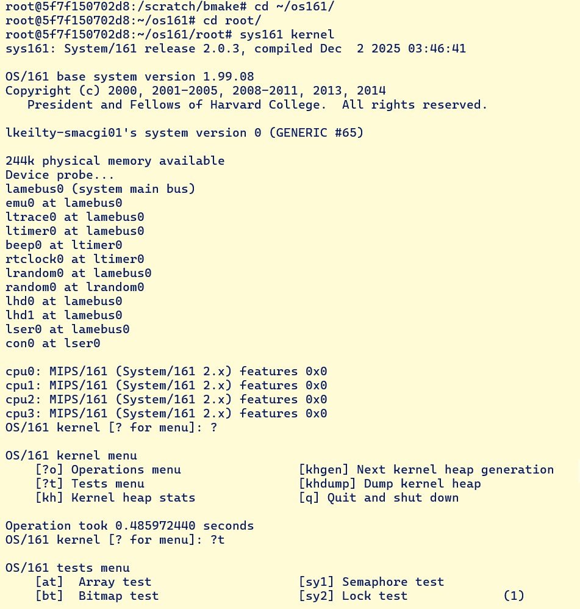
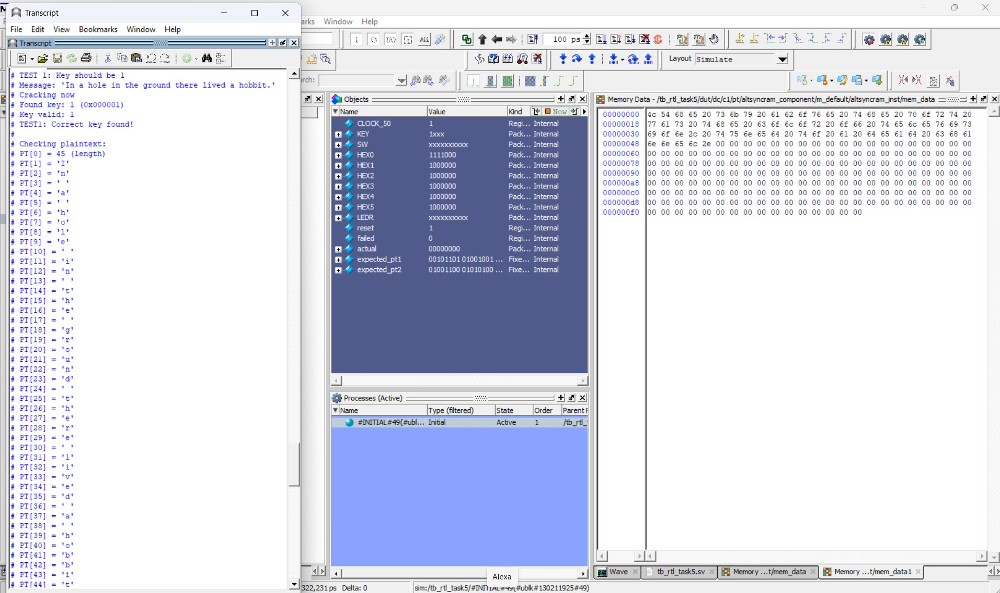
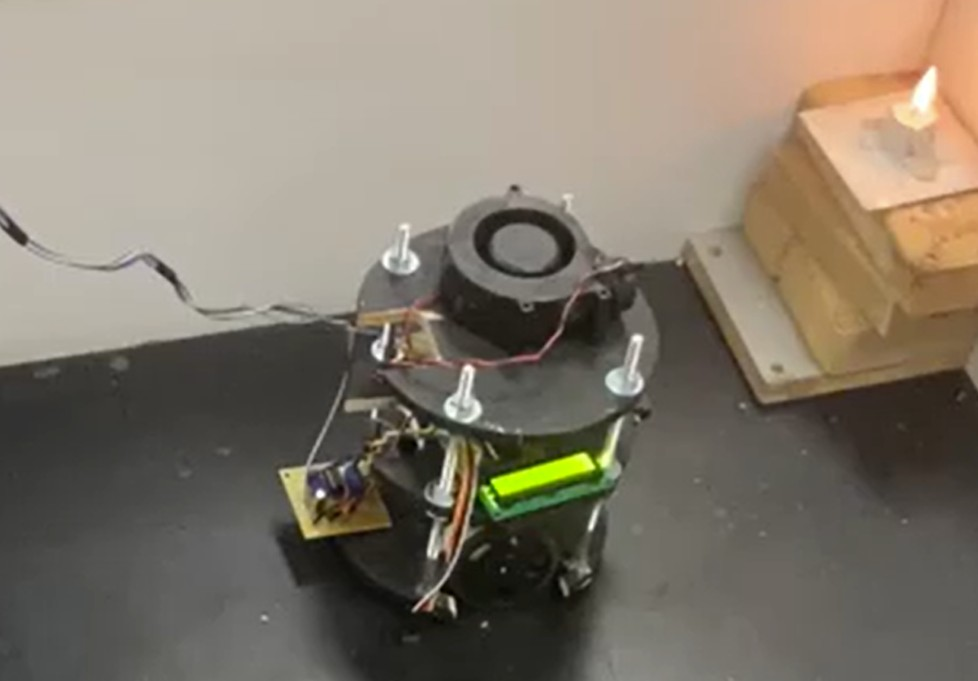
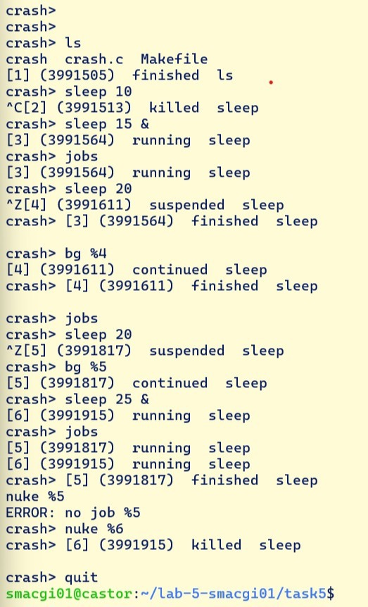

into sound.nRF5340 · BLE01
HARDWARE & FIRMWARE · 2026–27
Wireless Epidermal Biosensing for Biomusic
A wearable sensing patch that streams physiological signals to an app, helping Biomusic turn biosignals into music.
Computer Engineering @ UBC
I build thoughtful software and hardware, from real-time systems to the tools people use every day.
01 / A bit about me
From elaborate snow forts to embedded systems, I’ve always wanted to know how things work, and what I could make with them.
As a fourth-year Computer Engineering student at the University of British Columbia, I’ve worked on production systems across firmware, hardware, machine learning, and full-stack development. I enjoy the details: a responsive interface, a reliable protocol, or a system that stays fast under pressure.
Outside engineering, I ski and hike around BC and compete in varsity cross-country and track at UBC. As co-captain of UBC's cross-country team, I have learned to lead with initiative, support my teammates, and work toward shared goals. Balancing training with a demanding degree has also taught me to stay focused, adaptable, and steady when the pace picks up.
02 / Selected work
A mix of hardware, systems, and software. Pick a project to see what went into it.
HARDWARE & FIRMWARE · 2026–27
A wearable sensing patch that streams physiological signals to an app, helping Biomusic turn biosignals into music.
 ROS 2 / AUTONOMY02
ROS 2 / AUTONOMY02
AUTONOMOUS ROBOTICS · TEAM A2
A 1/10-scale car that navigates courses, avoids obstacles, reads parking signs, and parks. Fastest in both driving courses among 15 teams.

03OPERATING SYSTEMS
A Unix-like kernel built from scratch, with synchronization, system calls, process management, and virtual memory.

04FPGADIGITAL DESIGN · SYSTEMVERILOG
An FPGA cipher system with decryption, key search, and parallelized cryptanalysis.

05ROBOTICS · EMBEDDED
A maze-navigating robot that detects a flame and extinguishes it with an onboard fan.
 06
06
ROBOTICS · CONTROL
An infrared-sensing robot that finds, charges, and pushes opponents while keeping itself in the ring.

07C · UNIX SYSTEMS
A small shell with job control, signal handling, and foreground and background process management.
UBC ELECTRICAL & COMPUTER ENGINEERING CAPSTONE · 2026–27

An assistive technology project exploring how physiological signals can become music.
Biomusic aims to help caregivers and clinicians better understand the internal states of people who may not communicate verbally. Our capstone team is adapting a thin, skin-conformal epidermal patch as a comfortable, low-power sensing front end that streams physiological data to a mobile app in real time.
My contribution · Hardware & Firmware
I’m developing embedded firmware for the Nordic nRF5340, a dual-core Arm Cortex-M33 SoC. On its application core, FreeRTOS organizes sensor acquisition, data packaging, and Bluetooth Low Energy communication as concurrent real-time tasks. Our current milestone is a proof-of-concept BLE connection between the MCU and a mock mobile app.
FreeRTOS · Nordic nRF5340 · Arm Cortex-M33 · Bluetooth Low Energy · C · Embedded firmware · Multicore SoC · Biosignal acquisition
AUTONOMOUS ROBOTICS · TEAM A2
A 1/10-scale autonomous car that can navigate, react to obstacles, read parking signs, and park.
The ROS 2 system combines track-following planners with a safety layer that can reduce speed, plus a state machine coordinating parking-spot search, sign checks, parking, and exit maneuvers. The perception stack uses camera and depth data, LiDAR, and parking-sign recognition.
Competition result
Against 15 groups, our car was the fastest on both the obstacle course and the straight course, and achieved the most functional parking performance.
ROS 2 · Python · OpenCV · YOLOv8 · TensorRT · LiDAR · Depth camera · Ackermann steering
OPERATING SYSTEMS
Core kernel subsystems for a multi-process educational operating system.
Developed the foundations that move OS161 from a limited single-tasking kernel toward a robust system with process abstractions and virtual memory.
fork() and execv() process supportKernel C · Concurrency · GDB · Memory management · System calls
DIGITAL DESIGN · SYSTEMVERILOG
A complete ARC4 stream cipher system designed in SystemVerilog and implemented on FPGA.
The design handles state initialization, key scheduling, decryption, and brute-force key cracking. I split the search across decryption cores for near-2× speedup, then validated the system with RTL testbenches and on hardware.
SystemVerilog · FPGA · SRAM · RTL testbenches · Python
ROBOTICS · EMBEDDED
A robot that can navigate a maze, find an open flame, and put it out.
Combined sensor-based navigation, real-time decisions, and environmental feedback. The robot was the only one to successfully complete both challenge mazes.
Embedded robotics · Ultrasonic sensors · Infrared flame sensor · LCD
ROBOTICS · CONTROL
A fully autonomous robot built to find an opponent and push it out of the ring.
Infrared sensing locates competitors while phototransistors detect the ring edge, giving the robot an aggressive but controlled strategy.
BASIC · Infrared sensors · Phototransistors · DC motors · Custom circuits
C · UNIX SYSTEMS
A UNIX-like shell in C with process control and signal-safe job management.
The shell follows UNIX semantics for process groups and job lifecycles, with support for foreground and background execution.
jobs, fg, and bgfork and execvpSIGCHLD, SIGINT, and SIGTSTPC · GCC · UNIX system calls · POSIX signals · Process groups
03 / Say hello
I’m open to new opportunities and collaborations.